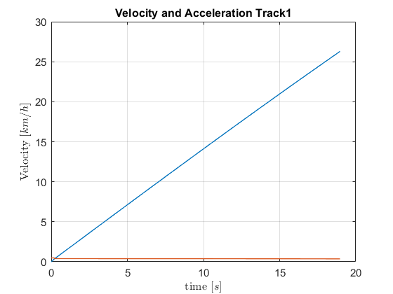
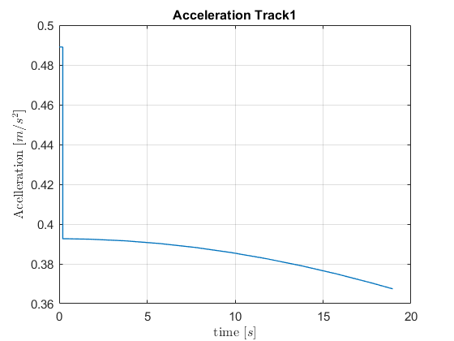

First task: Track characterization
Contents
Track1: Point A to B
To discover the slope of this segment one only has to know the length of the track a and the difference in altitude.
Length: From the script, the students are given the cartesian locations of the point A and B, so the distance is the simple euclidean distance:
clear
close all
A = [0 0];
B = [4.8 -70];
distance_A_B = sqrt(sum((A-B).^2));
Slope: To get the slope of the track, one must calculate the variation of elevation from point A to point B and divide by the length of the track all multiplied by 100, in order to give a slope of x%:
The elevations were taken from: https://earth.google.com/web/@38.7374323,-9.13903915,53.26387453a,257.77495577d,35y,0h,0t,0r Amazing tool! The previous link takes to the location of the campus.
elevation_A = 88;
elevation_B = 94;
% Variable to simulation
slope_of_track = 3;
Track2: Point C, D, E, F
Similar to track one, the length of each segment is given by the euclidean distance of the points given in the script. The slope is always 0 in this track.
C = [13.1 -97.5]; D = [19.2 -159]; E = [33.5 -158]; F = [28.5 -97.9]; distance_C_D = sqrt(sum((C-D).^2)); distance_D_E = sqrt(sum((D-E).^2)); distance_E_F = sqrt(sum((E-F).^2)); distance_F_C = sqrt(sum((F-C).^2));
Vehicle Dynamics Subsystem
The forces present in the vehicle are the traction force (), gravitational force ( ) and friction forces (F_d). The forces present are:
) and friction forces (F_d). The forces present are:
- Traction force;
- Drag force;
- Rolling friction force;
- Gravitational force;
Being:

; medium density; aerodynamic drag coefficient; A  frontal surface area;
frontal surface area;  wind speed;
wind speed;  rolling resistance coefficient; and mass a gravity;
rolling resistance coefficient; and mass a gravity;
At 25 ºC
air_density = 1.225; drag_coefficient = 0.33; surface_area = 2.14; wind_speed = (25/3.6); % If the velocity is less than 0.1 m/s rolling_resistance_coefficient_0 = 0; % If the velocity is greater than 0.1 m/s rolling_resistance_coefficient_1 = 0.01; mass = 900; gravity = 9.8; % Wind against car v_wind = 25/3.6; % To calculculate the equivalent mass of rotational parts wheel_inertia = 0.25; wheel_radius = 0.165; motor_rotor_inertia = 0.0025; gearbox_ratio = 8; equ_mass_of_rot_parts = (1/wheel_radius^2)*(wheel_inertia+motor_rotor_inertia*gearbox_ratio^2);
Track1: Simulation
Now, with a torque of 150 Nm, new it is possible to simulate the possible to simulate the movement of the Vienna car. To achieve this, a simulink model of the car dynamics was built:
open_system('car_dynamics_sim'); torque = 150; track1 = sim('car_dynamics_sim');
Thus, one can now study the evolution of the position of the car:
plot(track1.time, track1.position, 'LineWidth', 1); set( gca, 'FontSize', 11); grid on; title('Position track1'); xlabel('time $[s]$','Interpreter', 'latex'); ylabel('Position [$m$]','Interpreter', 'latex');
The car takes 19.45 seconds to go through the track 1.
The evolution of the velocity is:
plot(track1.time, -track1.velocity*3.6,track1.time, -track1.acceleration, 'LineWidth', 1); set( gca, 'FontSize', 11); grid on; title('Position track1'); xlabel('time $[s]$','Interpreter', 'latex'); ylabel('Velocity [$km/h$]','Interpreter', 'latex');
One can see that the maximum velocity is 26 [km/h], (which exceeds the lawfull velocity limits for the coexistence zones) and the acceleration is constant, equal to 3.67 [m/s^2].
The power traction developed by the vehicle during this motion is given by:
traction_force = (equ_mass_of_rot_parts + mass) * track1.acceleration;
traction_power = traction_force.*track1.velocity;
plot(track1.time, traction_power/1000);
% Energy
display(trapz(track1.time, traction_power/(1000*3600)));
0.0068